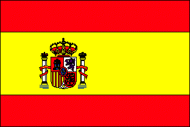
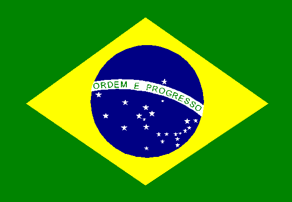

Arquivo digital 01 / 1999
Florianópolis · Santa Catarina · 20–23 setembro 1999
Experiências e Expectativas do Ensino de Estatística
Desafios para o Século XXI
Acervo digital da conferência internacional realizada na UFSC, reunindo trabalhos, autores e experiências que ajudam a compreender a constituição da Educação Estatística na América Latina.

Identidade original preservada
Marcas, apoios e vínculos institucionais tal como apareciam no site das atas.





O encontro
Um fórum internacional sobre ensinar e aprender Estatística
A conferência foi concebida como espaço de intercâmbio entre docentes, pesquisadores, instituições educacionais, associações de Estatística e especialistas em didática da Estatística. O documento de apresentação destaca a formação estatística em diferentes níveis, a pesquisa em Educação Estatística e o papel das novas tecnologias.
Os documentos preservados registram 21 artigos selecionados, 26 comunicações e 14 pôsteres. No conjunto, 54 trabalhos são identificados como apresentados e 7 como não apresentados.
Nota sobre o título. A maior parte dos HTML preservados registra “Experiências e Expectativas do Ensino de Estatística”. A imagem de abertura original e um relato preservado usam “Experiências e Perspectivas do Ensino da Estatística”. O acervo mantém as duas formas como variantes documentais do próprio evento.
Ler a apresentação original →Temas discutidos
Seis eixos organizam os 61 trabalhos
Os agrupamentos seguem os índices temáticos originais; os totais combinam artigos, comunicações e pôsteres.
Pesquisa e planejamento curricular
Currículos, livros didáticos, atitudes, avaliação, experiências didáticas e organização do ensino de Estatística.
Ensino de Estatística na formação de profissionais
Formação estatística em cursos superiores e em diferentes campos de atuação profissional.
Ensino de Estatística no 1º e 2º graus
Probabilidade, jogos, tarefas, práticas de sala de aula e propostas para a educação escolar.
Pesquisa em Educação Estatística
Investigações sobre ensino, aprendizagem, atitudes, tecnologia e a própria constituição do campo.
Formação de estatísticos para pesquisa e ensino aplicado
Licenciatura, pós-graduação e preparação para atuação em pesquisa e áreas aplicadas.
Formação permanente em Estatística
Atualização profissional, cultura estatística e experiências de formação continuada.
Participação internacional
126 autores vinculados a 9 países
A distribuição considera todos os 61 trabalhos do acervo, inclusive os sete registrados como não apresentados. País corresponde à afiliação ou localização institucional indicada no próprio trabalho, e não à nacionalidade do autor.
- Brasil57
- Argentina37
- Espanha10
- Chile6
- Cuba6
- Uruguai4
- Peru2
- Portugal2
- Venezuela2
Contagem de autores únicos após a reunião de variantes nominais evidentes. Quando o índice de autores e a página do trabalho divergem, prevalece a autoria e a afiliação registradas no próprio trabalho.
Brasil57 pessoas
Agostinho Roberto de Abreu · Ana Beatriz Tozzo Martins · Anelise Tomaz · Brasílio Ricardo Cirillo da Silva · Carlos Marcos Batista · Celi Aparecida Espasandin Lopes · Claudette Maria Medeiros Vendramini · Cláudia Borim da Silva · Clayde Regina Mendes · Clenir Irassogue · Cristian Cechinel · Cristina Faria Fidélis Gonçalves · Dierê Xavier Fernandez · Dinara W. Xavier Fernandez · Dione Lucchesi de Carvalho · Douglas Costa Corrêa · Elizabeth Strapasson · Ely Francina Tannuri de Oliveira · Estela Maris P. Bereta · Fernando Frei · Irene Maurício Cazorla · Ivan Ludgero Ivanqui · Janaína Paccola Lovato · Joel Augusto Muniz · José Fabiano da Serra Costa · Kirliam Maciel Dias · Lael Almeida Oliveira · Lídia Raquel de Carvalho · Lisiane Priscila Roldão Selau · Luis Carlos Messa · Mara Ribeiro Bartinik · Marcelo Menezes Reis · Márcia Echeveste · Márcia Regina Ferreira de Brito · Maria Cláudia Cabrini Grácio · Maria Lúcia Marçal Mazza Sundefeld · Maria Silvia A. Moura · Martha Maria Mischan · Masanao Ohira · Maurício Butzen · Natalie Haanwinckel Hurtado · Nelva Maria Zibetti Sganzerla · Nilza Nunes da Silva · Norberto Ilgner · Paulo César Oliveira · Paulo de Martino Jannuzzi · Regina Célia Carvalho Pinto Moran · Roberto Preussler · Robson Benito · Rosemeri A. Lunkes · Rui Vieira de Moraes · Sheila Zambello de Pinho · Sílvia Modesto Nassar · Suzana Leitão Russo · Terezinha A. Guedes · Thiago S. Saraiva · Tiemi Matsuo.
Argentina37 pessoas
Alicia Sara Isern de Perretti · Ana M. Zoppi · Atílio Angel Panzeri · Beatriz Baigorria · Beatriz Santone · César N. Aguirre · Cláudia Marcela Menéndez · Clotilde Ubeda · Clyde Lilián Aranda · Dora Franzini · Elda Gallese · Ezio Marchi · Gabriela Ranzuglia · Hebe Goldenhersch de Roitter · Jorge Francisco Ungaro · Lila Ricci · Liliana Severino · Luís Horácio Parodi · Magdalena Pekolj · Maria F. Niño · María Inés Rodríguez · Mariela Beatriz Cravero · Mirta L. Delgado · Marta Sforza · Noemí Ferreri · Noemí Prado · Nora Lac Prugent · Olga Vannucci · Pamela L. Martínez Fernández · Roberto Meyer · Roberto Sánchez · Silvia Malvicini · Silvia Seluy · Silvina Lopes Pereyra · Susana Vanlesberg · Teresita Evelina Terán · Virgínia Marta Koatz.
Espanha10 pessoas
Ángeles Blanco Blanco · Antônio P. Velandrino Nicolás · Federico Palacios González · Francisco Pozo · Javier Gómez Garcia · Javier López Sánchez · José Callejón Céspedes · Juan Bautista Cabello López · Rafael Herrerías Pleguezuelo · Víctor Abraira.
Chile6 pessoas
Gabriel Cavada Chacón · Guido Enrique del Pino · Irene Schiattino Lemus · Maria Isabel Ormeño Aguirre · Ricardo Aravena · Rodrigo Villegas.
Cuba6 pessoas
Aida G. Rodríguez Hernández · Carmen E. Viada González · Emílio R. Escartin · Evián Fernández García · Marcos L. Escobar Añel · Mercedes Delgado Fernández.
Uruguai4 pessoas
Esther Jeanette Hochsztain Kunin · Laura Nalbarte Migliaro · Ramón Álvarez · Raúl Ramírez Addiego.
Peru2 pessoas
Janette González Castro · Segundo Chuquilín Terán.
Portugal2 pessoas
Carolina Carvalho · Margarida César.
Venezuela2 pessoas
Audy Salcedo · Blanca Rodríguez de Escontrela.
Anais eletrônicos
Trabalhos do acervo
Carregando…
Pessoas
Quem aparece no encontro
Após confrontar os índices de autoria com as páginas dos próprios trabalhos e reunir variantes evidentes do mesmo nome, foram identificados 126 autores e coautores únicos.
Esse número descreve autoria dos 61 trabalhos do acervo — inclusive os sete registrados como não apresentados — e não o total de público presente. Não foi localizada, entre os arquivos preservados, uma lista completa de inscritos ou ouvintes.
Acesso ao acervo
Documentos do encontro
Índice originalArtigos por temaÍndice originalComunicações por temaÍndice originalPôsteres por temaProgramaçãoConferênciaProgramaçãoMinicursoDownloadAcervo completo (.zip)PreservaçãoInventário das imagens (.csv)
Integridade das imagens
Entre 201 arquivos de imagem distintos referenciados pelo HTML histórico, 99 foram recuperados e 102 permanecem ausentes. Três imagens da apresentação PRESTA (img016.JPG, img030.JPG e img035.JPG) foram recuperadas por renderização dos slides correspondentes no arquivo PowerPoint original preservado. Entre os arquivos ainda ausentes, 76 correspondem a figuras ou conteúdo visual e 26 a elementos de interface ou decoração. Quando uma figura ausente é solicitada, o acervo informa explicitamente que a imagem não foi preservada, sem reconstruir o conteúdo científico.
A pesquisa de recuperação localizou na web uma cópia integral, disponibilizada pela própria autora, do minicurso de Carmen Batanero — um dos documentos com figuras ausentes — e uma página da Universidade de Granada que confirma sua publicação nestas atas. Por preservação documental, essas fontes são registradas como referência e não substituem automaticamente os arquivos originais: cópia do minicurso · registro da Universidade de Granada.
Como citar este acervo
CONFERÊNCIA INTERNACIONAL “EXPERIÊNCIAS E EXPECTATIVAS DO ENSINO DE ESTATÍSTICA — DESAFIOS PARA O SÉCULO XXI”. Atas eletrônicas. Florianópolis: UFSC, 1999. Acervo digital organizado por Gerlan Silva da Silva.